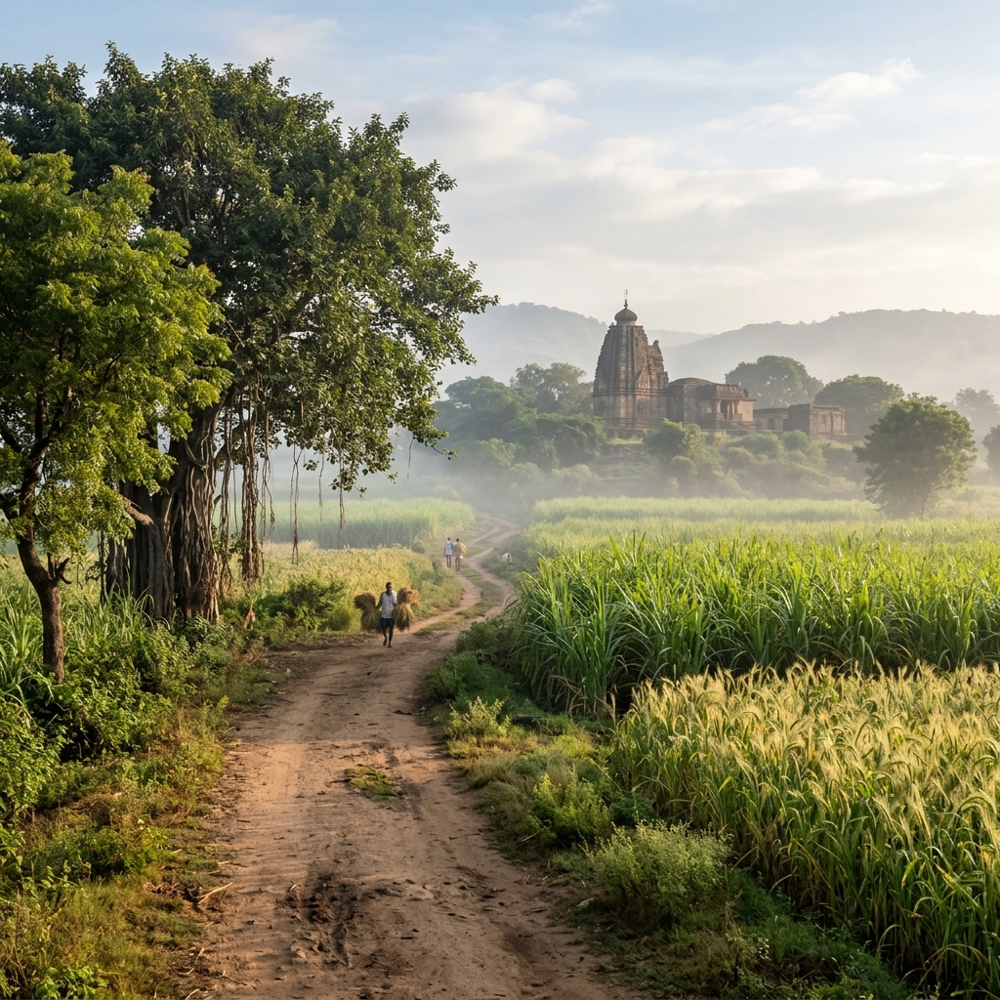

"Sangam is where rivers meet, and Sangameshwara is where the seeking soul finds peace in the quiet simplicity of the earth."

A comprehensive guide to help you plan your journey, understand temple timings, observe regional traditions, and navigate to Kosam village.
The temple is open daily for devotees. Please plan your visit around the morning calm and evening rituals to fully experience the spiritual atmosphere.
Shri Sangameshwara Swamy Temple is situated near Kosam village in the rural area of Bidar district, Karnataka. The location is easily accessible by road from neighboring towns.
Easily reached via local connecting roads branching off from the Humnabad-Bidar route. Hiring a private auto-rickshaw or riding a two-wheeler from Bidar or Humnabad is highly recommended.
Accessible via Humanabad-Bidar RouteHumanabad Railway Station and Bidar Railway Station are the nearest functional stations. From these stations, local auto-rickshaws or connecting road transport can be hired to reach Kosam.
Nearest Stations: Humanabad & BidarState transport (KSRTC) and private bus operators run regular buses to Bidar and Humnabad bus stands from major cities like Hyderabad and Bangalore. Local connecting transport runs to nearby village lanes.
Deboard at Humnabad or Bidar StandRajiv Gandhi International Airport in Hyderabad (HYD) is the closest international airport (~160 KM). From the airport, taxi services can be booked directly to Kosam. Bidar has limited domestic connectivity.
Nearest Major Airport: Hyderabad (HYD)Understand local customs, harvest tradition offerings, dress rules, and available facilities to ensure a comfortable stay.
Following an age-old rural custom, local farmers bring fresh grains, sugarcane, or jowar to offer to Sangameshwara Swamy before starting their trade or consuming the season's yield.
Filtered drinking water stations inside the temple yard.
Clean restroom facilities maintained near the entry gate.
Spacious parking space for two-wheelers and cars in the open grounds.
Managed footwear shelves operated free of cost.
Stone benches located under shady banyan trees.
Assistance for festival calendars, special poojas, and local guides.
Help us preserve the quiet holiness and simple natural beauty of this rural village shrine.
"Sangam is where rivers meet, and Sangameshwara is where the seeking soul finds peace in the quiet simplicity of the earth."
Find answers to common questions about traveling to Kosam village, temple facilities, and rituals.
Tap here to load the interactive Google Map and get detailed navigation directions to Kosam village.